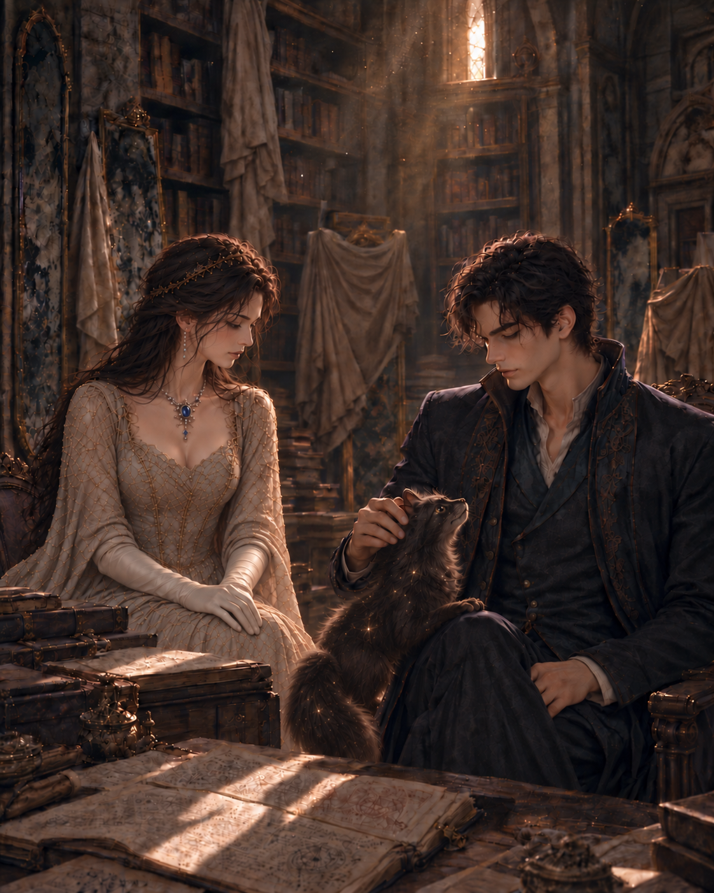

말은 생각보다 먼저 나갔다.
아이리스는 자신이 무슨 말을 했는지 뒤늦게 깨달았다.
공주가 사절로 온 경에게 할 말은 아니었다. 명령이라기에는 지나치게 개인적이었고, 부탁이라기에는 너무 날카로웠다.
홀리스는 웃지 않았다.
“알겠습니다.”
그는 정말로 시선을 장부로 내렸다.
아이리스는 잠시 그대로 서 있었다.
그녀는 천천히 맞은편 의자에 앉았다. 등받이에 몸을 기대지는 않았다. 두 손을 무릎 위에 가지런히 모았다.
홀리스가 장부를 읽으며 말했다.
“그렇게 앉으면 서 있는 것과 별로 다르지 않습니다.”
“보지 않기로 하지 않았나요?”
“보지 않아도 알 수 있는 것도 있습니다.”
아이리스는 그를 노려보았다.
홀리스의 입가가 아주 조금 올라갔다.
그때 서가 아래쪽에서 작게 종이가 스치는 소리가 났다.
홀리스도 고개를 들었다. 어두운 서가 틈에서 작은 그림자가 빠르게 지나갔다. 아이리스는 자리에서 반쯤 일어났다.
“잠깐.”
그림자가 멈췄다.
먼지가 쌓인 상자 뒤에서 작은 짐승이 고개를 내밀었다.
검은빛이 도는 털은 여기저기 엉켜 있었고, 한쪽 귀 끝이 조금 접혀 있었다. 고양이처럼 보이다가도 몸을 낮추고 움직이는 모습은 어린 여우와 닮아 있었다.
아이리스는 자신도 모르게 손을 내밀었다.
“이리 와.”
목소리가 조금 달라졌다.
공주의 명령도, 사람들 앞에서 사용하는 부드러운 권유도 아니었다. 아주 오래 혼자 짐승에게 건네던 목소리였다.
작은 짐승이 상자 뒤에서 나왔다.
그러다 홀리스를 발견했다.
아이리스는 저도 모르게 손을 멈췄다.
짐승은 홀리스를 잠시 바라보았다.
경계하는 것 같지는 않았다.
그렇다고 반가워하는 것도 아니었다.
인적이 드문 복도 끝이나 정원 벽 아래에 불쑥 나타났다가도, 누군가 다가오면 흔적도 없이 사라지는 짐승이었다.
다만 아이리스의 곁에서는 가끔 달아나지 않았다.
그녀가 부른다고 다가오는 것도,
기다린다고 나타나는 것도 아니었다.
그러면서도 전혀 예상하지 않은 날이면 창가에 앉아 그녀를 바라보고 있었다.
아이리스는 그것이 자신을 위로하러 온다고 생각한 적이 있었다. 어쩌면 짐승은 아이리스의 슬픔도 외로움도 알지 못했을 것이다.
그저 오고 싶을 때 왔다가, 떠나고 싶을 때 떠났을 뿐이었다.
작은 짐승은 아이리스의 손끝에 코를 대었다. 차고 축축했다.
그녀의 손 옆으로 거울을 덮은 천 한 귀퉁이가 걷혀 있었다. 아직 은막이 남은 가장자리에 아이리스의 손가락이 희미하게 비쳤다. 그 손가락에 코를 맞대고 선 짐승은 비치지 않았다.
간지러워 손을 조금 움츠리자 거울 속의 손도 따라 움직였다.
짐승은 그새 홀리스 쪽으로 가고 있었다.
홀리스는 움직이지 않았다. 손을 내밀지도, 소리를 내어 부르지도 않았다. 한참 그의 주위를 맴돌던 짐승이 그의 장화 끝 냄새를 맡더니 앞발 하나를 발등에 올렸다.
그제야 홀리스가 아래를 내려다보았다.
“아는 사이입니까?”
그가 아이리스에게 물었다.
“아니요.”
아이리스는 너무 빠르게 대답했다.
홀리스의 눈에 옅은 웃음이 스쳤다.
“그런 것치고는 전하를 아주 잘 아는 얼굴인데요.”
“가끔 마주쳤을 뿐입니다.”
“이름은요?”
아이리스는 대답하지 않았다.
혼자 있을 때 부를 이름 하나쯤은 붙여줄 수도 있었다. 다만 누군가 그 이름을 들으면, 공주의 짐승이라고 여길 것 같았다.
장부에 적히고,
먹이를 주는 장소가 정해지고,
궁정에서 허용되는 짐승인지 판정을 받아야 할 것 같았다.
그래서 아이리스는 그것이 오지 않는 날에도 찾으러 가지 않았다.
나타나면 곁에 두었고,
사라지면 기다리지 않았다.
적어도 기다리지 않는다고 생각했다.
“없어요.”
아이리스가 말했다.
홀리스는 작은 짐승을 내려다보았다.
“그렇군요.”
“이상하지 않나요?”
“무엇이요?”
“이름이 없다는 것이.”
홀리스는 잠시 생각했다.
“저 짐승은 별로 곤란해 보이지 않는데요.”
작은 짐승이 그의 무릎에 앞발을 올렸다.
홀리스는 이번에도 먼저 손을 대지 않았다.
짐승이 고개를 그의 손 아래로 밀어 넣고서야 손가락을 움직였다.

손길은 조심스러웠다.
익숙한 듯 자연스러웠지만, 붙잡으려는 힘은 없었다.
짐승은 눈을 가늘게 뜨고 그의 손바닥에 머리를 기댔다.
아이리스는 그 모습을 바라보다 다시 의자에 앉았다.
다른 사람과 함께 있을 때 모습을 드러낸 것은 처음이었다.
자신에게만 오던 존재를 빼앗긴 것 같지는 않았다.
애초에 그것은 한 번도 자신의 것이 아니었다.
짐승이 홀리스의 곁에 머무는 모습을 보고 있자, 아이리스는 이상하게 마음이 조금 느슨해지는 것을 느꼈다.
홀리스가 짐승의 접힌 귀 끝을 살피며 말했다.
“궁정에서 사는 것치고는 제법 태연하군요.”
“어디든 마음대로 다녀요. 오고 싶을 때 오고, 가고 싶을 때 가요.”
“현명한 짐승이군요.”
“그저 제멋대로인 것일 수도 있죠.”
그 말이 이상하게 홀리스에게도 어울린다고 생각했다.
홀리스는 한 손으로 장부를 펼쳐 들었다. 짐승은 그의 소매 끝에 턱을 얹은 채 눈을 감았다.
“경께서는 이 기록들이 무엇을 말하고 있다고 생각하십니까?”
아이리스가 물었다.
“아직 모르겠습니다.”
그는 담담하게 말을 이었다.
“몇 장을 읽었다고 곧바로 알았다고 말하는 편이 더 이상하지 않습니까?”
그의 손끝이 낡은 장부의 가장자리를 천천히 넘겼다.
“답을 먼저 정해두면, 기록에서는 그 답에 맞는 것만 보이게 되니까요.”
아이리스도 이곳에 답을 확인하러 왔다.
중앙의 기록이 옳다는 증거를 찾으려고.
그러나 눈보라 속에서 세 아이를 데리고 돌아온 이름을 읽은 뒤에도, 마지막까지 문을 닫지 않았다는 문장을 읽은 뒤에도, 어느 쪽 장부가 옳은지는 알 수 없었다.
조금 전까지는 그 사실이 불편했다.
홀리스가 모른다고 말하는 것을 듣고서야 아이리스는 자신이 그에게서도 회의에 가져갈 만한 대답을 기다리고 있었다는 걸 알았다.
그녀는 더 묻지 않았다. 홀리스도 설명하지 않았다.
한동안 두 사람은 마주 앉아 각자의 장부를 읽었다. 한쪽에서 종이를 넘기면 잠시 뒤 다른 쪽에서도 종이 넘어가는 소리가 났다.
작은 짐승이 갑자기 몸을 일으켰다.
잠시 뒤 복도 바깥에서 희미한 발소리가 들려왔다. 짐승의 귀가 곧게 섰다. 곧바로 숨지는 않았다. 홀리스의 무릎에서 가볍게 뛰어내린 뒤 문 쪽을 바라보았다.
발소리가 보관소 앞을 지나 멀어지자, 짐승은 아무 일도 없었다는 듯 서가 아래를 따라 걸었다.
아이리스가 손을 뻗기도 전에 그것은 어두운 통로 너머로 사라졌다.
아이리스는 짐승이 사라진 자리를 바라보았다.
홀리스가 손을 기울이자 검은 털 한 가닥이 펼쳐진 장부 위로 떨어졌다.
“저를 싫어하지는 않는 모양입니다.”
아이리스가 그를 바라보았다.
“사람을 판단하는 눈이 정확하지 않은가 보죠.”
“그렇다면 전하와 잘 어울리겠군요.”
“무슨 뜻이지요?”
“둘 다 제게 곁을 내어주었으니까요.”
아이리스의 얼굴이 굳었다.
“저는 그런 적 없습니다.”
“같은 방에 앉아 계시잖습니까.”
“우연히 마주친 것뿐이에요.”
“물론입니다.”
홀리스는 순순히 동의했다. 그 태도 때문에 아이리스는 더 반박할 수 없었다.
복도 밖에서 다시 발소리가 들렸다. 이번에는 보관소 문 앞에서 멈췄다.
아이리스는 반사적으로 등을 곧게 폈다. 손을 무릎 위에 모으고, 입술 끝을 올리고, 움직인 목걸이를 바로잡았다.
문은 아직 열리지도 않았다.
홀리스는 그 과정을 말없이 바라보았다.
“아무 말도 하지 마세요.”
“무엇에 대해서요?”
떨린 손목.
붉은 자국.
이름 없는 짐승.
거울의 시선 없이 마주 앉았던 시간.
어느 것을 가리키는지는 말하지 않았다.
홀리스도 묻지 않았다.
“그러겠습니다.”
발소리가 다시 멀어졌다. 아이리스는 만들어낸 미소를 그대로 유지했다.
홀리스가 천천히 자리에서 일어났다.
그는 이제 완벽한 예법으로 몸을 숙였다.
“그럼 다음 회의에서 뵙겠습니다, 전하.”
조금 전까지 의자에 느슨하게 기대 앉아 이름 없는 짐승을 쓰다듬던 손이 제복의 솔기를 따라 반듯이 놓여 있었다. 흠잡을 데 없는 베인가 사절의 인사였다. 아이리스에게는 아직 그의 손 아래 눈을 가늘게 뜨던 짐승의 얼굴이 선했다.
홀리스가 문 쪽으로 걸어갔다.
“홀리스 경.”
그가 돌아보았다.
아이리스는 무슨 말을 하려 했는지 알 수 없었다.
장부를 함께 보자고 할 수도 있었고, 그가 찾던 기록이 무엇인지 다시 물을 수도 있었다.
그러나 입술 사이로 나온 것은 전혀 다른 말이었다.
“여기에는 정말 거울이 없군요.”
홀리스의 시선이 천으로 덮인 벽을 천천히 훑었다.
“네.”
그가 말했다.
“그래서 전하의 얼굴이 오늘 가장 잘 보였습니다.”
아이리스의 호흡이 멈췄다.
홀리스는 대답을 기다리지 않았다. 문이 열리고, 복도의 빛이 그의 어깨 위로 잠시 번졌다.
곧 문이 닫혔다.
아이리스는 혼자 남았다.
탁자 위에는 북부의 오래된 장부가 펼쳐져 있었다. 글씨 한 자 없는 여백에 검은 털 한 가닥이 놓여 있었다.
그녀는 손목을 감싸 쥐었다.
아팠다.
이번에는 괜찮다고 말하지 않았다.
목걸이가 목 아래를 누르고 있었다. 그것에도 다른 이름을 붙이지 않았다.
아이리스는 천천히 의자 등받이에 몸을 기댔다.
처음에는 어깨만 닿았다.
잠시 뒤에는 등의 무게까지 맡겼다.
아무도 보지 않았다.
그런데도 이번에는, 바로 자세를 고쳐 앉고 싶지 않았다.